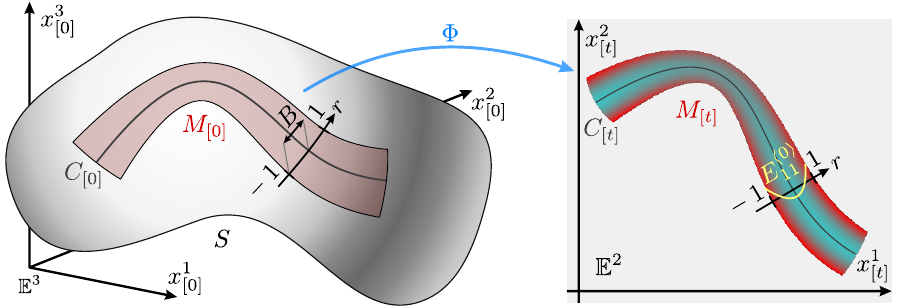
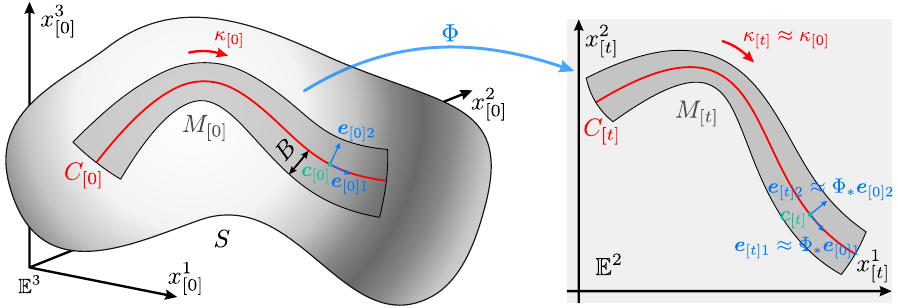

Symbolic computation
There are two .ipynb files in ElasticSurfaceEmbedding-wolfram repository.
MainTheorem.ipynbAnalyticSolution.ipynb
These files are used for some symbolic computation, so you can skip this part if you just want to make a surface model. The following contents describes the rule of these files.
Please install the following software in your environment.
Main theorems
There are two theorems in our paper.
In the range of sufficiently small breadth $B$ of the curved piece, the piece is in an approximately $u^1$-directional uniaxial stress state at each point, and the principal strain can be approximated as
\[E^{\langle 0 \rangle}_{11} \approx \frac{1}{2}K_{[0]}B^2\left(r^2-\frac{1}{3}\right), \quad E^{\langle 0 \rangle}_{22} \approx -\nu E^{\langle 0 \rangle}_{11}\]
where $K_{[0]}$ is the Gaussian curvature along the center curve $C_{[0]}$ of the reference state $M_{[0]}$, $r$ is a normalized breadth-directional coordinate ($−1 \le r \le 1$).

Let $C_{[0]}$ be the center curve of $M_{[0]}$, $\kappa_{[0]}$ be its geodesic curvature, $B$ be the breadth from center curve of $M_{[0]}$. Similarly, let $C_{[t]}$ be the center curve of $M_{[t]}$ , $\kappa_{[t]}$ be its planer curvature. If the breadth $B$ is sufficiently small, then the following approximation is satisfied.
\[g_{[t]}|_C \approx g_{[0]}|_C, \quad \kappa_{[t]} \approx \kappa_{[0]}.\]

The proof is too hard to calculate by hand, so we wrote code to solve this problem by Wolfram language.
Analytic solutions
There are analytic solutions for some specific problem. Please try AnalyticSolution.ipynb for more information.